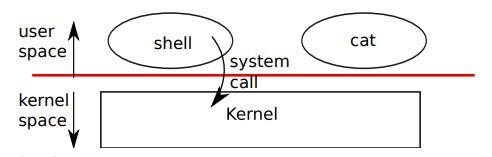
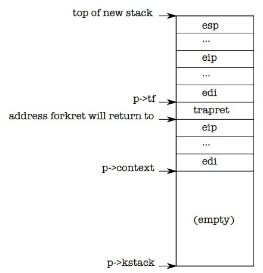

The job of an operating system is to share a computer among multiple programs and to provide a more useful set of services than the hardware alone supports. The operating system manages and abstracts the low-level hardware, so that, for example, a word processor need not concern itself with which type of disk hardware is being used. It also shares the hardware among multiple programs so that they run (or appear to run) at the same time. Finally, operating systems provide controlled ways for programs to interact, so that they can share data or work together.
An operating system provides services to user programs through an interface. Designing a good interface turns out to be difficult. On the one hand, we would like the interface to be simple and narrow because that makes it easier to get the implementation right. On the other hand, we may be tempted to offer many sophisticated features to applications. The trick in resolving this tension is to design interfaces that rely on a few mechanisms that can be combined to provide much generality.
This book uses a single operating system as a concrete example to illustrate operating system concepts. That operating system, xv6, provides the basic interfaces introduced by Ken Thompson and Dennis Ritchie’s Unix operating system, as well as mimicking Unix’s internal design. Unix provides a narrow interface whose mechanisms combine well, offering a surprising degree of generality. This interface has been so successful that modern operating systems—BSD, Linux, Mac OS X, Solaris, and even, to a lesser extent, Microsoft Windows—have Unix-like interfaces. Understanding xv6 is a good start toward understanding any of these systems and many others.
As shown in Figure 0-1, xv6 takes the traditional form of a kernel, a special program that provides services to running programs. Each running program, called a process, has memory containing instructions, data, and a stack. The instructions implement the program’s computation. The data are the variables on which the computation acts. The stack organizes the program’s procedure calls.
When a process needs to invoke a kernel service, it invokes a procedure call in the operating system interface. Such a procedure is called a system call. The system call enters the kernel; the kernel performs the service and returns. Thus a process alternates between executing in user space and kernel space.
The kernel uses the CPU’s hardware protection mechanisms to ensure that each process executing in user space can access only its own memory. The kernel executes with the hardware privileges required to implement these protections; user programs execute without those privileges. When a user program invokes a system call, the hardware raises the privilege level and starts executing a pre-arranged function in the kernel.
The collection of system calls that a kernel provides is the interface that user programs see. The xv6 kernel provides a subset of the services and system calls that Unix kernels traditionally offer. Figure 0-2 lists all of xv6’s system calls.
The rest of this chapter outlines xv6’s services—processes, memory, file descriptors, pipes, and file system—and illustrates them with code snippets and discussions of how the shell, which is the primary user interface to traditional Unix-like systems, uses them. The shell’s use of system calls illustrates how carefully they have been designed. The shell is an ordinary program that reads commands from the user and executes them. The fact that the shell is a user program, not part of the kernel, illustrates the power of the system call interface: there is nothing special about the shell. It also means that the shell is easy to replace; as a result, modern Unix systems have a variety of shells to choose from, each with its own user interface and scripting features. The xv6 shell is a simple implementation of the essence of the Unix Bourne shell. Its implementation can be found at line 8550.
An xv6 process consists of user-space memory (instructions, data, and stack) and per-process state private to the kernel. Xv6 can time-share processes: it transparently switches the available CPUs among the set of processes waiting to execute. When a process is not executing, xv6 saves its CPU registers, restoring them when it next runs the process. The kernel associates a process identifier, or pid, with each process.
A process may create a new process using the fork system call. Fork creates a new process, called the child process, with exactly the same memory contents as the calling process, called the parent process. Fork returns in both the parent and the child. In the parent, fork returns the child’s pid; in the child, it returns zero. For example, consider the following program fragment:
int pid = fork();
if(pid > 0){
printf("parent: child=%d\n", pid);
pid = wait();
printf("child %d is done\n", pid);
} else if(pid == 0){
printf("child: exiting\n");
exit();
} else {
printf("fork error\n");
}
The exit system call causes the calling process to stop
executing and to release resources such as memory and open
files. The wait system call returns the pid of an exited
child of the current process; if none of the caller's
children has exited, wait waits for one to do so. In the
example, the output lines
parent: child=1234
child: exiting
might come out in either order, depending on whether the parent or child gets to its printf call first. After the child exits the parent’s wait returns, causing the parent to print
parent: child 1234 is done
| System call | Description |
| fork() | Create a process |
| exit() | Terminate the current process |
| wait() | Wait for a child process to exit |
| kill(pid) | Terminate process pid |
| getpid() | Return the current process’s pid |
| sleep(n) | Sleep for n clock ticks |
| exec(filename, *argv) | Load a file and execute it |
| sbrk(n) | Grow process’s memory by n bytes |
| open(filename, flags) | Open a file; the flags indicate read/write |
| read(fd, buf, n) | Read n bytes from an open file into buf |
| write(fd, buf, n) | Write n bytes to an open file |
| close(fd) | Release open file fd |
| dup(fd) | Duplicate fd |
| pipe(p) | Create a pipe and return fd’s in p |
| chdir(dirname) | Change the current directory |
| mkdir(dirname) | Create a new directory |
| mknod(name, major, minor) | Create a device file |
| fstat(fd) | Return info about an open file |
| link(f1, f2) | Create another name (f2) for the file f1 |
| unlink(filename) | Remove a file |
Although the child has the same memory contents as the parent initially, the parent and child are executing with different memory and different registers: changing a variable in one does not affect the other. For example, when the return value of wait is stored into pid in the parent process, it doesn’t change the variable pid in the child. The value of pid in the child will still be zero. The exec system call replaces the calling process’s memory with a new memory image loaded from a file stored in the file system. The file must have a particular format, which specifies which part of the file holds instructions, which part is data, at which instruction to start, etc. xv6 uses the ELF format, which Chapter 2 discusses in more detail. When exec succeeds, it does not return to the calling program; instead, the instructions loaded from the file start executing at the entry point declared in the ELF header. exec takes two arguments: the name of the file containing the executable and an array of string arguments. For example:
char *argv[3];
argv[0] = "echo";
argv[1] = "hello";
argv[2] = 0;
exec("/bin/echo", argv);
printf("exec error\n");
This fragment replaces the calling program with an instance of the program /bin/echo running with the argument list echo hello. Most programs ignore the first argument, which is conventionally the name of the program.
The xv6 shell uses the above calls to run programs on behalf of users. The main structure of the shell is simple; see main (8701). The main loop reads a line of input from the user with getcmd. Then it calls fork, which creates a copy of the shell process. The parent calls wait, while the child runs the command. For example, if the user had typed ‘‘echo hello’’ to the shell, runcmd would have been called with ‘‘echo hello’’ as the argument. runcmd (8606) runs the actual command. For ‘‘echo hello’’, it would call exec (8626). If exec succeeds then the child will execute instructions from echo instead of runcmd. At some point echo will call exit, which will cause the parent to return from wait in main (8701). You might wonder why fork and exec are not combined in a single call; we will see later that separate calls for creating a process and loading a program is a clever design.
Xv6 allocates most user-space memory implicitly: fork allocates the memory required for the child’s copy of the parent’s memory, and exec allocates enough memory to hold the executable file. A process that needs more memory at run-time (perhaps for malloc) can call sbrk(n) to grow its data memory by n bytes; sbrk returns the location of the new memory.
Xv6 does not provide a notion of users or of protecting one user from another; in Unix terms, all xv6 processes run as root
A file descriptor is a small integer representing a kernel-managed object that a process may read from or write to. A process may obtain a file descriptor by opening a file, directory, or device, or by creating a pipe, or by duplicating an existing descriptor. For simplicity we’ll often refer to the object a file descriptor refers to as a ‘‘file’’; the file descriptor interface abstracts away the differences between files, pipes, and devices, making them all look like streams of bytes.
Internally, the xv6 kernel uses the file descriptor as an index into a per-process table, so that every process has a private space of file descriptors starting at zero. By convention, a process reads from file descriptor 0 (standard input), writes output to file descriptor 1 (standard output), and writes error messages to file descriptor 2 (standard error). As we will see, the shell exploits the convention to implement I/O redirection and pipelines. The shell ensures that it always has three file descriptors open (8707), which are by default file descriptors for the console.
The read and write system calls read bytes from and write
bytes to open files named by file descriptors. The
call read(fd, buf, n) reads at most n bytes
from the file descriptor fd, copies them into buf, and
returns the number of bytes read. Each file descriptor
that refers to a file has an offset associated with
it. Read reads data from the current file offset and then
advances that offset by the number of bytes read: a
subsequent read will return the bytes following the ones
returned by the first read. When there are no more bytes
to read, read returns zero to signal the end of the file.
The call write(fd, buf, n) writes n bytes from buf to the file descriptor fd and
returns the number of bytes written. Fewer than n bytes are written only when an error
occurs. Like read, write writes data at the current file offset and then advances
that offset by the number of bytes written: each write picks up where the previous
one left off.
The following program fragment (which forms the essence of cat) copies data from its standard input to its standard output. If an error occurs, it writes a message to the standard error.
char buf[512];
int n;
for(;;) {
n = read(0, buf, sizeof buf);
if(n == 0)
break;
if(n < 0) {
fprintf(2, "read error\n");
exit();
}
if(write(1, buf, n) != n){
fprintf(2, "write error\n");
exit();
}
}
The important thing to note in the code fragment is that cat doesn’t know whether it is reading from a file, console, or a pipe. Similarly cat doesn’t know whether it is printing to a console, a file, or whatever. The use of file descriptors and the convention that file descriptor 0 is input and file descriptor 1 is output allows a simple implementation of cat.
The close system call releases a file descriptor, making it free for reuse by a future open, pipe, or dup system call (see below). A newly allocated file descriptor is always the lowest-numbered unused descriptor of the current process.
File descriptors and fork interact to make I/O redirection easy to implement. Fork copies the parent’s file descriptor table along with its memory, so that the child starts with exactly the same open files as the parent. The system call exec replaces the calling process’s memory but preserves its file table. This behavior allows the shell to implement I/O redirection by forking, reopening chosen file descriptors, and then execing the new program. Here is a simplified version of the code a shell runs for the command cat < input.txt:
char *argv[2];
argv[0] = "cat";
argv[1] = 0;
if(fork() == 0) {
close(0);
open("input.txt", O_RDONLY);
exec("cat", argv);
}
After the child closes file descriptor 0, open
is guaranteed to use that file descriptor for
the newly opened input.txt: 0
will be the smallest available file
descriptor. Cat then executes with file
descriptor 0 (standard input) referring to input.txt.
The code for I/O redirection in the xv6 shell works in exactly this way (8630). Recall that at this point in the code the shell has already forked the child shell and that runcmd will call exec to load the new program. Now it should be clear why it is a good idea that fork and exec are separate calls. Because if they are separate, the shell can fork a child, use open, close, dup in the child to change the standard input and output file descriptors, and then exec. No changes to the program being exec-ed (cat in our example) are required. If fork and exec were combined into a single system call, some other (probably more complex) scheme would be required for the shell to redirect standard input and output, or the program itself would have to understand how to redirect I/O.
Although fork copies the file descriptor table, each underlying file offset is shared between parent and child. Consider this example:
if(fork() == 0) {
write(1, "hello ", 6);
exit();
} else {
wait();
write(1, "world\n", 6);
}
At the end of this fragment, the file attached to file descriptor 1 will contain the data hello world. The write in the parent (which, thanks to wait, runs only after the child is done) picks up where the child’s write left off. This behavior helps produce sequential output from sequences of shell commands, like
(echo hello; echo world) > output.txt
The dup system call duplicates an existing file descriptor, returning a new one that refers to the same underlying I/O object. Both file descriptors share an offset, just as the file descriptors duplicated by fork do. This is another way to write hello world into a file:
fd = dup(1);
write(1, "hello ", 6);
write(fd, "world\n", 6);
Two file descriptors share an offset if they
were derived from the same original file
descriptor by a sequence of fork and dup
calls. Otherwise file descriptors do not share
offsets, even if they resulted from open calls
for the same file. Dup allows shells to
implement commands like this: ls existing-file
non-existing-file > tmp1 2>&1. The 2>&1 tells
the shell to give the command a file
descriptor 2 that is a duplicate of descriptor
1. Both the name of the existing file and the
error message for the non-existing file will
show up in the file tmp1. The xv6 shell
doesn’t support I/O redirection for the error
file descriptor, but now you know how to
implement it.
File descriptors are a powerful abstraction, because they hide the details of what they are connected to: a process writing to file descriptor 1 may be writing to a file, to a device like the console, or to a pipe.
A pipe is a small kernel buffer exposed to processes as a pair of file descriptors, one for reading and one for writing. Writing data to one end of the pipe makes that data available for reading from the other end of the pipe. Pipes provide a way for processes to communicate.
The following example code runs the program wc with standard input connected to the read end of a pipe.
int p[2];
char *argv[2];
argv[0] = "wc";
argv[1] = 0;
pipe(p);
if(fork() == 0) {
close(0);
dup(p[0]);
close(p[0]);
close(p[1]);
exec("/bin/wc", argv);
} else {
close(p[0]);
write(p[1], "hello world\n", 12);
close(p[1]);
}
The program calls pipe, which creates a new pipe and records the read and write file descriptors in the array p. After fork, both parent and child have file descriptors referring to the pipe. The child dups the read end onto file descriptor 0, closes the file descriptors in p, and execs wc. When wc reads from its standard input, it reads from the pipe. The parent closes the read side of the pipe, writes to the pipe, and then closes the write side.
If no data is available, a on a pipe waits for either data to be written or all file descriptors referring to the write end to be closed; in the latter case, will return 0, just as if the end of a data file had been reached. The fact that blocks until it is impossible for new data to arrive is one reason that it's important for the child to close the write end of the pipe before executing above: if one of file descriptors referred to the write end of the pipe, would never see end-of-file.
The xv6 shell implements pipelines such as
fork sh.c | wc -l
in a manner similar to the above code (8650). The child process creates a pipe to connect the left end of the pipeline with the right end. Then it calls and for the left end of the pipeline and and for the right end, and waits for both to finish. The right end of the pipeline may be a command that itself includes a pipe (e.g., which itself forks two new child processes (one for and one for Thus, the shell may create a tree of processes. The leaves of this tree are commands and the interior nodes are processes that wait until the left and right children complete. In principle, you could have the interior nodes run the left end of a pipeline, but doing so correctly would complicate the implementation.
Pipes may seem no more powerful than temporary files: the pipeline
echo hello world | wc
could be implemented without pipes as
echo hello world > /tmp/xyz; wc < /tmp/xyz
Pipes have at least four advantages over temporary
files in this situation. First, pipes
automatically clean themselves up; with the file
redirection, a shell would have to be careful to
remove /tmp/xyz when done. Second,
pipes can pass arbitrarily long streams of data,
while file redirection requires enough free space
on disk to store all the data. Third, pipes allow
for parallel execution of pipeline stages, while
the file approach requires the first program to
finish before the second starts. Fourth, if you
are implementing inter-process communication,
pipes' blocking reads and writes are more
efficient than the non-blocking semantics of
files.
The xv6 file system provides data files, which are
uninterpreted byte arrays, and directories, which
contain named references to data files and other
directories. The directories form a tree, starting
at a special directory called the root. A path
like /a/b/c refers to the file or
directory named c inside the
directory named b inside the
directory named a in the root
directory
/. Paths that don’t begin with /
are evaluated relative to the calling process's
current directory, which can be changed with the
chdir system call. Both these code fragments open
the same file (assuming all the directories
involved exist):
chdir("/a");
chdir("b");
open("c", O_RDONLY);
open("/a/b/c", O_RDONLY);
The first fragment changes the process’s current directory to /a/b; the second neither refers to nor changes the process’s current directory.
There are multiple system calls to create a new file or directory: mkdir creates a new directory, open with the O_CREATE flag creates a new data file, and mknod creates a new device file. This example illustrates all three:
mkdir("/dir");
fd = open("/dir/file", O_CREATE|O_WRONLY);
close(fd);
mknod("/console", 1, 1);
Mknod creates a file in the file system, but the file has no contents. Instead, the file’s metadata marks it as a device file and records the major and minor device numbers (the two arguments to mknod), which uniquely identify a kernel device. When a process later opens the file, the kernel diverts read and write system calls to the kernel device implementation instead of passing them to the file system. fstat retrieves information about the object a file descriptor refers to. It fills in a struct stat, defined in stat.h as:
#define T_DIR 1 // Directory
#define T_FILE 2 // File
#define T_DEV 3 // Device
struct stat {
short type; // Type of file
int dev; // File system’s disk device
uint ino; // Inode
number short nlink; // Number of links to file
uint size; // Size of file in bytes
};
A file's name is distinct from the file
itself; the same underlying file, called an
inode , can have multiple names,
called
.italic-index links .
The
link
system call creates another file system name
referring to the same inode as an existing file.
This fragment creates a new file named both
a
and
b .
open("a", O_CREATE|O_WRONLY);
link("a", "b");
Reading from or writing to
a is the same as reading from or
writing to b. Each inode is
identified by a unique inode number. After
the code sequence above, it is possible to determine
that a and b refer to the
same underlying contents by inspecting the result of
fstat: both will return the same inode number
(ino), and the nlink count
will be set to 2.
The unlink system call removes a name
from the file system. The file's inode and the disk
space holding its content are only freed when the
file's link count is zero and no file descriptors
refer to it. Thus adding
unlink("a");
to the last code sequence leaves the inode and
file content accessible as b .
Furthermore,
fd = open("/tmp/xyz", O_CREATE|O_RDWR);
unlink("/tmp/xyz");
is an idiomatic way to create a temporary inode
that will be cleaned up when the process closes
fd
or exits.
Shell commands for file system operations are
implemented as user-level programs such as
mkdir, ln, rm,
etc. This design allows anyone to extend the shell
with new user commands by just adding a new
user-level program. In hindsight this plan seems
obvious, but other systems designed at the time of
Unix often built such commands into the shell (and
built the shell into the kernel).
One exception is cd, which is built into the shell (8716)
cd must change the current working
directory of the shell itself. If cd
were run as a regular command, then the shell would
fork a child process, the child process would run
cd , and cd would change the
child's working directory. The parent's (i.e.,
the shell's) working directory would not change.
Unix's combination of the "standard" file descriptors, pipes, and convenient shell syntax for operations on them was a major advance in writing general-purpose reusable programs. The idea sparked a whole culture of "software tools" that was responsible for much of Unix's power and popularity, and the shell was the first so-called "scripting language." The Unix system call interface persists today in systems like BSD, Linux, and Mac OS X.
The Unix system call interface has been standardized through the Portable
Operating System Interface (POSIX) standard. Xv6 is not
POSIX compliant. It misses system calls (including basic ones such as
lseek), it implements systems calls
only partially, etc. Our main goals for xv6 are
simplicity and clarity while providing a simple
UNIX-like system-call interface. Several people
have extended xv6 with a few more basic system calls
and a simple C library so that they can run basic
Unix programs. Modern kernels, however, provide
many more system calls, and many more kinds of
kernel services, than xv6. For example, they
support networking, windowing systems, user-level
threads, drivers for many devices, and so on.
Modern kernels evolve continuously and rapidly, and
offer many features beyond POSIX.
For the most part, modern Unix-derived operating
systems have not followed the early Unix model of
exposing devices as special files, like the
console device file discussed above.
The authors of Unix went on to build Plan 9, which
applied the "resources are files" concept to modern
facilities, representing networks, graphics, and
other resources as files or file trees.
The file system abstraction has been a powerful idea. Even so, there are other models for operating system interfaces. Multics, a predecessor of Unix, abstracted file storage in a way that made it look like memory, producing a very different flavor of interface. The complexity of the Multics design had a direct influence on the designers of Unix, who tried to build something simpler.
This book examines how xv6 implements its Unix-like interface, but the ideas and concepts apply to more than just Unix. Any operating system must multiplex processes onto the underlying hardware, isolate processes from each other, and provide mechanisms for controlled inter-process communication. After studying xv6, you should be able to look at other, more complex operating systems and see the concepts underlying xv6 in those systems as well.
A key requirement for an operating system is to support several activities at once. For
example, using the system call interface described in chapter 0 a process can start new processes with
fork The operating system must time-share
the resources of the computer among these processes. For example, even if there are more processes
than there are hardware processors, the operating system must ensure that all of the processes
make progress. The operating system must also arrange for isolation between the processes.
That is, if one process has a bug and fails, it shouldn't affect processes that don't depend on the failed process.
Complete isolation, however, is too strong, since it should be possible for processes to interact; pipelines are an example.
Thus an operating system must fulfil three requirements: multiplexing, isolation, and interaction.
This chapter provides an overview of how operating systems are organized to achieve
these 3 requirements. It turns out there are many ways to do so, but this text
focuses on mainstream designs centered around a monolithic kernel, which is used by many Unix operating systems.
This chapter introduces xv6's design by tracing the creation of the first process when xv6 starts
running. In doing so, the text provides a glimpse of the implementation of all
major abstractions that xv6 provides, how they interact, and how the three
requirements of multiplexing, isolation, and interaction are met. Most of xv6
avoids special-casing the first process, and instead reusesthat xv6 must
provide for standard operation. Subsequent chapters will explore each
abstraction in more detail.
Xv6 runs on Intel 80386 or later ("x86") processors on a PC platform, and much of its low-level functionality (for example, its process implementation) is x86-specific. This book assumes the reader has done a bit of machine-level programming on some architecture, and will introduce x86-specific ideas as they come up. Appendix A(TODO link this) briefly outlines the PC platform.
The first question one might ask when encountering an operating system is why have it at all? That is, one could implement the system calls in .figref unix:api as a library, with which applications link. In this plan, each application could even have its own library tailored to its needs. Applications could directly interact with hardware resources and use those resources in the best way for the application (e.g., to achieve high or predictable performance). Some operating systems for embedded devices or real-time systems are organized in this way.
The downside of this library approach is that, if there is more than one application running, the applications must be well-behaved. For example, each application must periodically give up the processor so that other applications can run. Such a cooperative time-sharing scheme may be OK if all applications trust each other and have no bugs. It's more typical for applications to not trust each other, and to have bugs, so one often wants stronger isolation than a cooperative scheme provides.
To achieve strong isolation it's helpful to forbid applications from
directly accessing sensitive hardware resources, and instead to abstract the
resources into services. For example, applications interact with a file system
only through open, read, write, and close
system calls, instead of read and writing raw disk sectors.
This provides the application with the convenience of pathnames, and it allows
the operating system (as the implementor of the interface) to manage the disk.
Similarly, Unix transparently switches hardware processors among processes, saving and restoring register state as necessary, so that applications don't have to be aware of time sharing. This transparency allows the operating system to share processors even if some applications are in infinite loops.
As another example, Unix processes use exec to build up their memory image,
instead of directly interacting with physical memory.
This allows the operating system to decide where to place a process in
memory; if memory is tight, the operating system might even store some of
a process's data on disk. Exec also provides
users with the convenience of a file system to store executable program images.
Many forms of interaction among Unix processes occur via file descriptors. Not only do file descriptors abstract away many details (e.g. where data in a pipe or file is stored), they also are defined in a way that simplifies interaction. For example, if one application in a pipeline fails, the kernel generates end-of-file for the next process in the pipeline.
As you can see, the system call interface in .figref unix:api is carefully designed to provide both programmer convenience and the possibility of strong isolation. The Unix interface is not the only way to abstract resources, but it has proven to be a very good one.
Strong isolation requires a hard boundary between applications and the operating system. If the application makes a mistake, we don't want the operating system to fail or other applications to fail. Instead, the operating system should be able to clean up the failed application and continue running other applications. To achieve strong isolation, the operating system must arrange that applications cannot modify (or even read) the operating system's data structures and instructions and that applications cannot access other process's memory.
Processors provide hardware support for strong isolation. For example, the x86 processor, like many other processors, has two modes in which the processor can execute instructions: kernel mode and user mode. In kernel mode the processor is allowed to execute privileged instructions. For example, reading and writing the disk (or any other I/O device) involves privileged instructions. If an application in user mode attempts to execute a privileged instruction, then the processor doesn't execute the instruction, but switches to kernel mode so that the software in kernel mode can clean up the application, because it did something it shouldn't be doing. Figure 0-1 in in Chapter 0 illustrates this organization. An application can execute only user-mode instructions (e.g., adding numbers, etc.) and is said to be running in "user space", while the software in kernel mode can also execute privileged instructions and is said to be running in "kernel space". The software running in kernel space (or in kernel mode) is called the "kernel".
An application that wants to read or write a file on disk must transition to the
kernel to do so, because the application itself can not execute I/O
instructions. Processors provide a special instruction that switches the
processor from user mode to kernel mode and enters the kernel at an entry point
specified by the kernel. (The x86 processor provides the int instruction
for this purpose.) Once the processor has switched to kernel mode,
the kernel can then validate the arguments of the system call, decide whether
the application is allowed to perform the requested operation, and then deny it
or execute it. It is important that the kernel sets the entry point for
transitions to kernel mode; if the application could decide the kernel entry
point, a malicious application could enter the kernel at a point where the
validation of arguments etc. is skipped.
A key design question is what part of the operating system should run in kernel mode. One possibility is that the entire operating system resides in the kernel, so that the implementations of all system calls run in kernel mode. This organization is called a monolithic kernel.
In this organization the entire operating system runs with full hardware privilege. This organization is convenient because the OS designer doesn't have to decide which part of the operating system doesn't need full hardware privilege. Furthermore, it easy for different parts of the operating system to cooperate. For example, an operating system might have a buffer cache that can be shared both by the file system and the virtual memory system.
A downside of the monolithic organization is that the interfaces between different parts of the operating system are often complex (as we will see in the rest of this text), and therefore it is easy for an operating system developer to make a mistake. In a monolithic kernel, a mistake is fatal, because an error in kernel mode will often result in the kernel to fail. If the kernel fails, the computer stops working, and thus all applications fail too. The computer must reboot to start again.
To reduce the risk of mistakes in the kernel, OS designers can minimize the amount of operating system code that runs in kernel mode, and execute the bulk of the operating system in user mode. This kernel organization is called a microkernel.
Figure 1-1 illustrates this microkernel design. In the figure, the file system runs as a user-level process. OS services running as processes are called servers. To allow applications to interact with the file server, the kernel provides an inter-process communication mechanism to send messages from one user-mode process to another. For example, if an application like the shell wants to read or write a file, it sends a message to the file server and waits for a response.
In a microkernel, the kernel interface consists of a few low-level functions for starting applications, sending messages, accessing device hardware, etc. This organization allows the kernel to be relatively simple, as most of the operating system resides in user-level servers.
Xv6 is implemented as a monolithic kernel, following most Unix operating systems. Thus, in xv6, the kernel interface corresponds to the operating system interface, and the kernel implements the complete operating system. Since xv6 doesn't provide many services, its kernel is smaller than some microkernels.
The unit of isolation in xv6 (as in other Unix operating systems) is a "process". The process abstraction prevents one process from wrecking or spying on another process's memory, CPU, file descriptors, etc. It also prevents a process from wrecking the kernel itself, so that a process can't subvert the kernel's isolation mechanisms. The kernel must implement the process abstraction with care because a buggy or malicious application may trick the kernel or hardware in doing something bad (e.g., circumventing enforced isolation). The mechanisms used by the kernel to implement processes include the user/kernel mode flag, address spaces, and time-slicing of threads.
To help enforce isolation, the process abstraction provides the illusion to a program that it has its own private machine. A process provides a program with what appears to be a private memory system, or "address space", which other processes cannot read or write. A process also provides the program with what appears to be its own CPU to execute the program's instructions.
Xv6 uses page tables (which are implemented by hardware) to give each process its own address space. The x86 page table translates (or ``maps'') a "virtual address"(the address that an x86 instruction manipulates) to a "physical address" (an address that the processor chip sends to main memory).
Xv6 maintains a separate page table for each process that defines that process's address space. As illustrated in .figref as , an address space includes the process's "user memory" starting at virtual address zero. Instructions come first, followed by global variables, then the stack, and finally a ``heap'' area (for malloc) that the process can expand as needed.
Each process's address space maps the kernel's instructions
and data as well as the user program's memory.
When a process invokes a system call, the system call
executes in the kernel mappings of the process's address space.
This arrangement exists so that the kernel's system call
code can directly refer to user memory.
In order to leave plenty of room for user memory,
xv6's address spaces map the kernel at high addresses,
starting at
0x80100000 .
The xv6 kernel maintains many pieces of state for each process,
which it gathers into a
struct proc
A process's most important pieces of kernel state are its
page table, its kernel stack, and its run state.
We'll use the notation p->xxx to refer to elements of the
proc structure.
Each process has a thread of execution (or
.italic-index thread
for short) that executes the process's instructions.
A thread can be suspended and later resumed.
To switch transparently between processes,
the kernel suspends the currently running thread and resumes another process's
thread. Much of the state of a thread (local variables, function call return
addresses) is stored on the thread's stacks.
Each process has two stacks: a user stack and a kernel stack
(p->kstack). When the process is executing user instructions, only its user stack
is in use, and its kernel stack is empty.
When the process enters the kernel (for a system call or interrupt),
the kernel code executes on the process's kernel stack; while
a process is in the kernel, its user stack still contains saved
data, but isn't actively used.
A process's thread alternates between actively using its user stack
and its kernel stack. The kernel stack is separate (and protected from
user code) so that the kernel
can execute even if a process has wrecked its user stack.
When a process makes a system call, the processor switches to the kernel stack, raises the hardware privilege level, and starts executing the kernel instructions that implement the system call. When the system call completes, the kernel returns to user space: the hardware lowers its privilege level, switches back to the user stack, and resumes executing user instructions just after the system call instruction. A process's thread can ``block'' in the kernel to wait for I/O, and resume where it left off when the I/O has finished.
p->state indicates whether the process is allocated, ready
to run, running, waiting for I/O, or exiting.
p->pgdir holds the process's page
table, in the format that the x86 hardware expects.
xv6 causes the paging hardware to use a process's
memory p->pgdir when executing that
process. A process's page table also serves as the
record of the addresses of the physical pages
allocated to store the process's memory.
To make the xv6 organization more concrete, we'll look how the kernel creates the first address space (for itself), how the kernel creates and starts the first process, and how that process performs the first system call. By tracing these operations we see in detail how xv6 provides strong isolation for processes. The first step in providing strong isolation is setting up the kernel to run in its own address space.
When a PC powers on, it initializes itself and then loads a
boot loader from disk into memory and
executes it. Appendix B explains the details. Xv6's
boot loader loads the xv6 kernel from disk and
executes it starting
at entry. The
x86 paging hardware is not enabled when the kernel
starts; virtual addresses map directly to physical
addresses.
The boot loader loads the xv6 kernel into memory at physical address
0x100000.
The reason it doesn't load the kernel at
0x80100000 ,
where the kernel expects to find its instructions and data,
is that there may not be any physical memory at such
a high address on a small machine.
The reason it places the kernel at
0x100000
rather than
0x0
is because the address range
0xa0000:0x100000
contains I/O devices.
.figure astmp
To allow the rest of the kernel to run,
entry
sets up a page table that maps virtual addresses starting at
0x80000000
(called KERNBASE)
to physical addresses starting at
0x0
(see .figref as ).
Setting up two ranges of virtual addresses that map to the same physical memory
range is a common use of page tables, and we will see more examples like this
one.
The entry page table is defined in main.c
.line 'main.c:/^pde_t.entrypgdir.*=/' .
We look at the details of page tables in Chapter \*[CH:MEM],
but the short story is that entry 0 maps virtual addresses
0:0x400000
to physical addresses
0:0x400000.
This mapping is required as long as
entry
is executing at low addresses, but
will eventually be removed.
Entry 512
maps virtual addresses
KERNBASE:KERNBASE+0x400000
to physical addresses
0:0x400000. This entry will be used by the kernel after
entry
has finished; it maps the high virtual addresses at which
the kernel expects to find its instructions and data
to the low physical addresses where the boot loader loaded them.
This mapping restricts the kernel instructions and data to 4 Mbytes.
Returning to
entry
it loads the physical address of
entrypgdir
into control register
%cr3.
The value in
%cr3
must be a physical address.
It wouldn't make sense for
%cr3
to hold the virtual address of
entrypgdir,
because the paging hardware
doesn't know how to translate virtual addresses yet; it
doesn't have a page table yet.
The symbol
entrypgdir,
refers to an address in high memory,
and the macro
V2P_WO
subtracts
KERNBASE
in order to find the physical address.
To enable the paging hardware, xv6 sets the flag
CR0_PG
in the control register
%cr0
The processor is still executing instructions at
low addresses after paging is enabled, which works
since
entrypgdir
maps low addresses.
If xv6 had omitted entry 0 from
entrypgdir,
the computer would have crashed when trying to execute
the instruction after the one that enabled paging.
Now
entry
needs to transfer to the kernel's C code, and run
it in high memory.
First it makes the stack pointer,
%esp,
point to memory to be used as a stack
.line entry.S:/movl.*stack.*esp/ .
All symbols have high addresses, including
stack ,
so the stack will still be valid even when the
low mappings are removed.
Finally
entry
jumps to
main ,
which is also a high address.
The indirect jump is needed because the assembler would
otherwise generate a PC-relative direct jump, which would execute
the low-memory version of main. Main
cannot return, since the there's no return PC on the stack.
Now the kernel is running in high addresses in the function
main.
Now we'll look at how the kernel creates user-level processes and ensures that they are strongly isolated.
After
main
initializes several devices and subsystems,
it creates the first process by calling
userinit,
Userinit's
first action is to call
allocproc,
The job of
is to allocate a slot
struct proc
in the process table and
to initialize the parts of the process's state
required for its kernel thread to execute.
Allocproc is called for each new process, while
userinit
is called only for the very first process.
Allocproc
scans the
proc
table for a slot with state
UNUSED
When it finds an unused slot,
allocproc
sets the state to
EMBRYO
to mark it as used and
gives the process a unique
pid,
Next, it tries to allocate a kernel stack for the
process's kernel thread. If the memory allocation fails,
allocproc
changes the state back to
UNUSED
and returns zero to signal failure.

Now allocproc must set up the new process's kernel stack.
allocproc
is written so that it can be used by
fork
as well
as when creating the first process.
allocproc sets up the new process with a
specially prepared kernel stack and set of kernel
registers that cause it to "return" to user space when
it first runs. The layout of the prepared kernel stack
will be as shown in figure 1-4. allocproc
does part of this work by setting up return program
counter values that will cause the new process's kernel
thread to first execute in forkret and then
in trapret.
The kernel thread will start executing with register contents copied from
p->context. Thus setting p->context->eip
to forkret will cause the kernel thread to execute at
the start of forkret.
This function will return to whatever address is at the bottom of the stack.
The context switch code sets
the stack pointer to point just beyond the end of p->context.
allocproc places p->context on the stack, and puts a pointer to
trapret just above it; that is where forkret
will return. trapret restores user registers
from values stored at the top of the kernel stack and jumps
into the process
This setup is the same for ordinary fork
and for creating the first process, though in
the latter case the process will start executing at
user-space location zero rather than at a return from
fork.
As we will see in Chapter 3, the way that control transfers from user software to the kernel
is via an interrupt mechanism, which is used by system calls, interrupts, and exceptions.
Whenever control transfers into the kernel while a process is running,
the hardware and xv6 trap entry code save user registers on the
process's kernel stack.
userinit writes values at the top of the new stack that
look just like those that would be there if the
process had entered the kernel via an
interrupt.
so that the ordinary code for returning from
the kernel back to the process's user code will work.
These values are a
struct trapframe
which stores the user registers. Now the new process's kernel stack is
completely prepared as shown in
Figure 1-4.
The first process is going to execute a small program (initcode.S). The process needs physical memory in which to store this program, the program needs to be copied to that memory, and the process needs a page table that maps user-space addresses to that memory.
userinit calls setupkvm
to create a page table for the process with (at first) mappings
only for memory that the kernel uses.
We will study this function in detail in Chapter 2, but
at a high level setupkvm and userinit
create an address space
as shown in
Figure 1-2.
The initial contents of the first process's user-space memory are
the compiled form of
initcode.S ;
as part of the kernel build process, the linker
embeds that binary in the kernel and
defines two special symbols,
_binary_initcode_start
and
_binary_initcode_size ,
indicating the location and size of the binary.
Userinit
copies that binary into the new process's memory
by calling
inituvm ,
which allocates one page of physical memory,
maps virtual address zero to that memory,
and copies the binary to that page
.line vm.c:/^inituvm/ .
Then
userinit
sets up the trap frame
.line x86.h:/^struct.trapframe/
with the initial user mode state:
the
.register cs
register contains a segment selector for the
SEG_UCODE
segment running at privilege level
DPL_USER
(i.e., user mode rather than kernel mode),
and similarly
.register ds ,
.register es ,
and
.register ss
use
SEG_UDATA
with privilege
DPL_USER .
The
.register eflags
FL_IF
bit is set to allow hardware interrupts;
we will reexamine this in Chapter \*[CH:TRAP].
The stack pointer
.register esp
is set to the process's largest valid virtual address,
p->sz.
The instruction pointer is set to the entry point
for the initcode, address 0.
The function
userinit
sets
p->name
to
"initcode"
mainly for debugging.
Setting
p->cwd
sets the process's current working directory;
we will examine
namei
in detail in Chapter \*[CH:FS].
Once the process is initialized,
userinit
marks it available for scheduling by setting
p->state
to
RUNNABLE.
.\"
.section "Code: Running the first process"
.\"
Now that the first process's state is prepared, it is time
to run it. After main calls
userinit,
mpmain
calls
scheduler
to start running processes
.line main.c:/scheduler/ .
Scheduler
.line proc.c:/^scheduler/
looks for a process with
p->state
set to
RUNNABLE ,
and there's only one:
initproc .
It sets the per-cpu variable
proc
to the process it found and calls
switchuvm
to tell the hardware to start using the target
process's page table
.line vm.c:/lcr3.*V2P.p..pgdir/ .
Changing page tables while executing in the kernel
works because
setupkvm
causes all processes' page tables to have identical
mappings for kernel code and data.
switchuvm
also sets up a task state segment
SEG_TSS
that instructs the hardware to
execute system calls and interrupts
on the process's kernel stack.
We will re-examine the task state segment in Chapter \*[CH:TRAP].
scheduler
now sets
p->state
to
RUNNING
and calls
swtch
.line swtch.S:/^swtch/
to perform a context switch to the target process's kernel thread.
swtch
first saves the current registers.
The current context is not a process but rather a special
per-cpu scheduler context, so
scheduler
tells
swtch
to save the current hardware registers in per-cpu storage
cpu->scheduler ) (
rather than in any process's kernel thread context.
swtch
then loads the saved registers
of the target kernel thread
p->context ) (
into the x86 hardware registers,
including the stack pointer and instruction pointer.
We'll examine
swtch
in more detail in Chapter \*[CH:SCHED].
The final
ret
instruction
.line swtch.S:/ret$/
pops the target process's
.register eip
from the stack, finishing the context switch.
Now the processor is running on the kernel stack of process
p .
Allocproc
had previously set
initproc 's
p->context->eip
to
forkret ,
so the
ret
starts executing
forkret .
On the first invocation (that is this one),
forkret
.line proc.c:/^forkret/
runs initialization functions that cannot be run from
main
because they must be run in the context of a regular process with its own
kernel stack.
Then,
forkret
returns.
Allocproc
arranged that the top word on the stack after
p->context
is popped off
would be
trapret ,
so now
trapret
begins executing,
with
.register esp
set to
p->tf .
Trapret
.line trapasm.S:/^trapret/
uses pop instructions to restore registers from
the trap frame
.line x86.h:/^struct.trapframe/
just as
swtch
did with the kernel context:
popal
restores the general registers,
then the
popl
instructions restore
.register gs ,
.register fs ,
.register es ,
and
.register ds .
The
addl
skips over the two fields
trapno
and
errcode .
Finally, the
iret
instruction pops
.register cs ,
.register eip ,
.register flags ,
.register esp ,
and
.register ss
from the stack.
The contents of the trap frame
have been transferred to the CPU state,
so the processor continues at the
.register eip
specified in the trap frame.
For
initproc ,
that means virtual address zero,
the first instruction of
initcode.S .
At this point,
.register eip
holds zero and
.register esp
holds 4096.
These are virtual addresses in the process's address space.
The processor's paging hardware translates them into physical addresses.
allocuvm
has set up the process's page table so that virtual address
zero refers
to the physical memory allocated for this process,
and set a flag
PTE_U ) (
that tells the paging hardware to allow user code to access that memory.
The fact that
userinit
.line proc.c:/UCODE/
set up the low bits of
.register cs
to run the process's user code at CPL=3 means that the user code
can only use pages with
PTE_U
set, and cannot modify sensitive hardware registers such as
.register cr3 .
So the process is constrained to using only its own memory.
.\"
.section "The first system call: exec"
.\"
Now that we have seen how the kernel provides strong isolation for processes, let's look at how a user-level process re-enters the kernel to ask for services that it cannot perform itself.
The first action of
initcode.S
is to invoke the
exec
system call.
As we saw in Chapter \*[CH:UNIX],
exec
replaces the memory and registers of the
current process with a new program, but it leaves the
file descriptors, process id, and parent process unchanged.
Initcode.S
.line initcode.S:/^start/
begins by pushing three values
on the stack—\c
$argv ,
$init ,
and
$0 —\c
and then sets
.register eax
to
SYS_exec
and executes
int
T_SYSCALL :
it is asking the kernel to run the
exec
system call.
If all goes well,
exec
never returns: it starts running the program
named by
$init ,
which is a pointer to
the NUL-terminated string
"/init"
.line initcode.S:/init.0/,/init.0/ .
The other argument is the
argv
array of command-line arguments; the zero at the
end of the array marks its end.
If the
exec
fails and does return,
initcode
loops calling the
exit
system call, which definitely
should not return
.line initcode.S:/for.*exit/,/jmp.exit/ .
This code manually crafts the first system call to look like an ordinary system call, which we will see in Chapter \*[CH:TRAP]. As before, this setup avoids special-casing the first process (in this case, its first system call), and instead reuses code that xv6 must provide for standard operation.
Chapter \*[CH:MEM] will cover the implementation of
exec
in detail, but at a high level it
replaces
initcode
with the
/init
binary, loaded out of the file system.
Now
initcode
.line initcode.S:1
is done, and the process will run
/init
instead.
Init
.line init.c:/^main/
creates a new console device file
if needed
and then opens it as file descriptors 0, 1, and 2.
Then it loops,
starting a console shell,
handles orphaned zombies until the shell exits,
and repeats.
The system is up.
.\"
.section "Real world"
.\"
In the real world, one can find both monolithic kernels and microkernels. Many Unix kernels are monolithic. For example, Linux has a monolithic kernel, although some OS functions run as user-level servers (e.g., the windowing system). Kernels such as L4, Minix, QNX are organized as a microkernel with servers, and have seen wide deployment in embedded settings.
Most operating systems have adopted the process
concept, and most processes look similar to xv6's.
A real operating system would find free
proc
structures with an explicit free list
in constant time instead of the linear-time search in
allocproc;
xv6 uses the linear scan
(the first of many) for simplicity.
.\"
.section "Exercises"
.\"
1. Set a breakpoint at swtch. Single step with gdb's
stepi
through the ret to
forkret ,
then use gdb's
finish
to proceed to
trapret ,
then
stepi
until you get to
initcode
at virtual address zero.
2.
KERNBASE
limits the amount of memory a single process can use,
which might be irritating on a machine with a full 4 GB of RAM.
Would raising
KERNBASE
allow a process to use more memory?